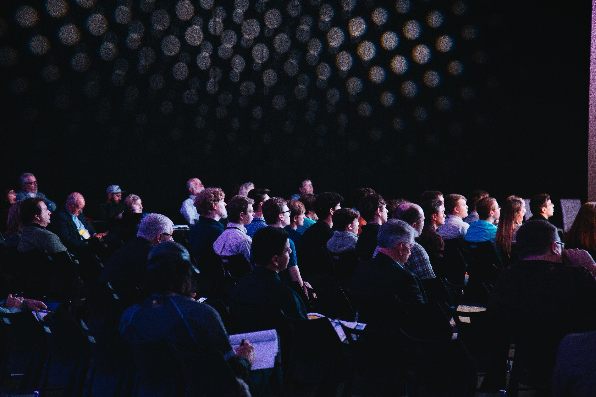
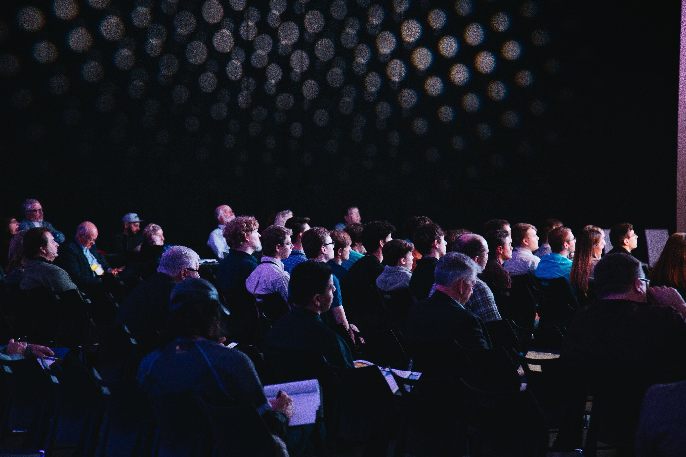

Creative Commons Global Summit 2022
The Global Summit brings together the community of experts, academics,
and activists who comprise the Creative Commons affiliate network in a
different country every two years.
This year, we hope to expand our invitation list including organizations and
indiviluals who want to work with us on shared projects that advance the cause
of the Commons, free culture and open knowledge.
So if you are active in the worlds of open content and free knowledge -
free software advocates, Wikipedians, Open Knowledge, galleries - we you will
consider joining us this year to build a stronger, more vibrant Commons together.
Please contact us per Email for any further questions about CC Global Summit 2022!
ccsummit2022@cckorea.orgCreative Commons Global Summit 2022 Logo
The logo of CC Global Summit 2022 was decided through the logo competition
from 8 June to 7 July.
After online public voting and Selection Comittee's judging process, the Logo
from Naresh Agrawal won the prize.
After consultation with Mr. Agrawal we optimized the prize winning logo for
this year summit as following.
See the past CC Global Summits
Take a look at the last two CC Global Summits which took place in Buenos Aires and Peru.
 
